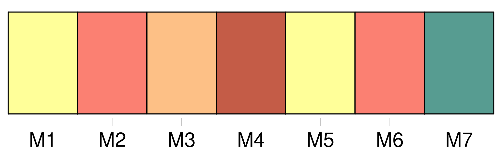
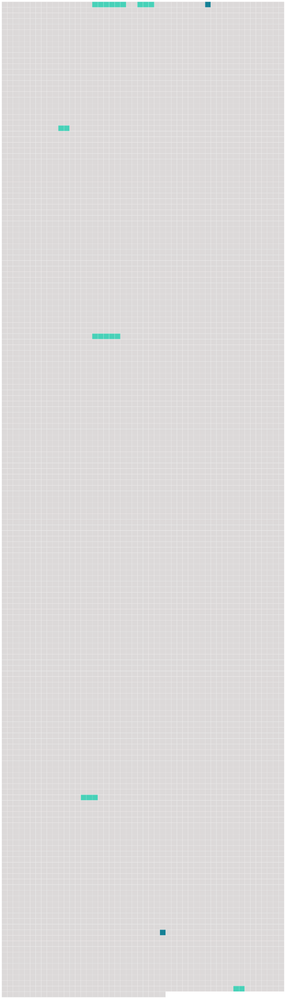

Longueur nb maillons : 8 mentions |
 |
Le trait particulier du caractère de Mlle de Hautefort, par-dessus toutes ses autres qualités, [le fond même de son âme] , était [une fierté généreuse] , à moitié chevaleresque, à moitié chrétienne, [qui] la poussait du côté des opprimés et des faibles. [37 phrases] Ces bizarres jalousies, ces longues et fatigantes assiduités pesaient quelquefois un peu à la jeune fille, et, avec son indépendance et [sa fierté] , elle le témoignait. [39 phrases] Celle -ci s’ en moquait avec l’ étourderie de son âge et [la fierté de son caractère] [101 phrases] On poussa Mme de Hautefort à en parler à Louis XIII et même à Richelieu ; elle le fit, mais avec [une fierté maladroite] qui ne réussit pas. [22 phrases] La surprise du roi fut extrême en la voyant avec un air de grandeur et de [fierté] tout ensemble que le dépit lui donnoit et qui augmentoit sa beauté. [10 phrases] Cette conduite avait été un coup douloureux à [sa fierté] et à sa tendresse ; elle en souffrait plus que de l’ exil, et la façon dont elle en parle à la reine se ressent du trouble et de l’ amertume de son cœur. |
 |
Il est possible de télécharger la ressource sur la page Ortolang |
Si vous avez des questions ou vous voyez des erreurs, merci d'envoyer un mail à silvia.federzoni89@gmail.com |